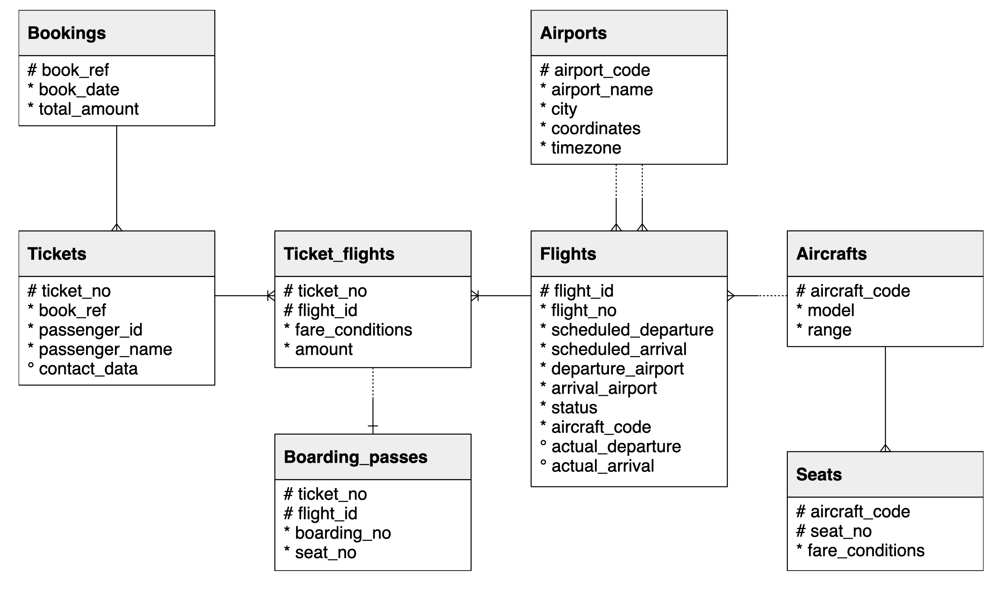
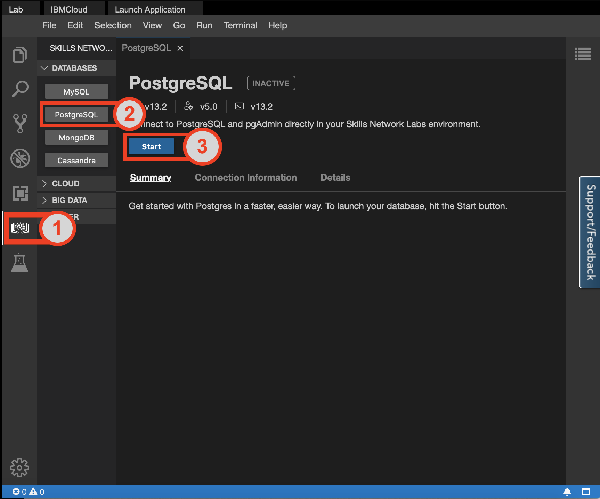
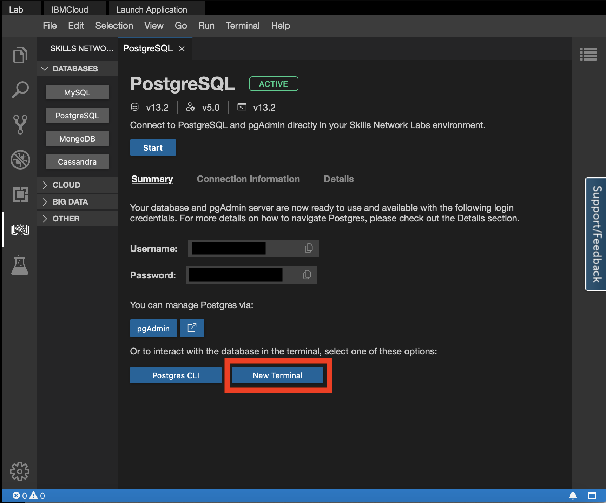
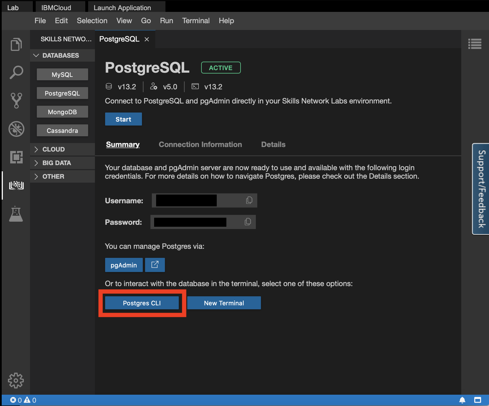
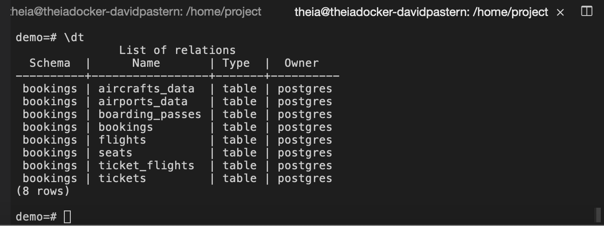
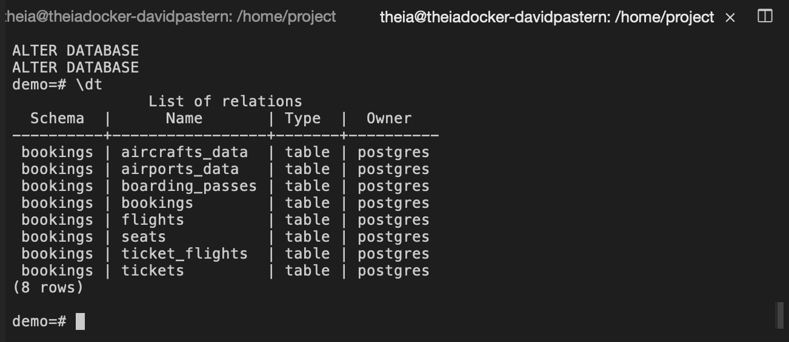
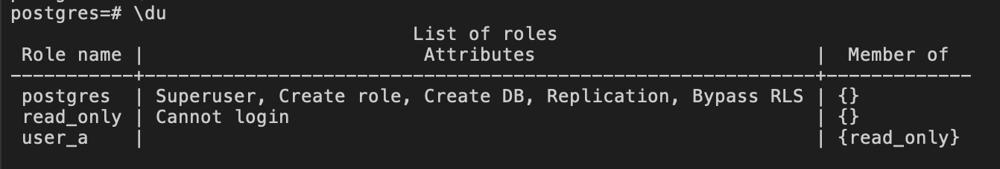
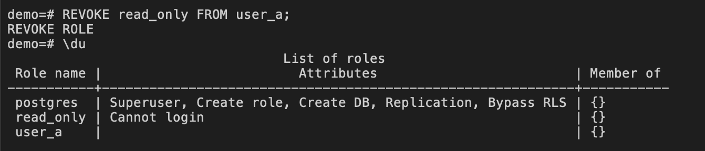

Estimated time needed: 15 minutes
For much of the routine tasks involved with interacting with a database, such as reading the content of a table or adding new entries, the postgres superuser may not be appropriate as it bypasses all permission checks, which carries inherent risk. Furthermore, as a database administrator, you will almost certainly not be the only one who will need to access the database in some capacity. For this reason, you will need a way to add new users to the database and give them the proper privileges that is appropriate for their use cases.
After completing this lab, you will be able to:
In this lab, you will be using PostgreSQL. It is a popular open-source object Relational Database Management System (RDBMS) capable of performing a wealth of database administration tasks, such as storing, manipulating, retrieving, and archiving data.
To complete this lab, you will be accessing the PostgreSQL service through the IBM Skills Network (SN) Cloud IDE, which is a virtual development environnement you will utilize throughout this course.
In this lab, you will use a database from https://postgrespro.com/education/demodb distributed under the PostgreSQL licence. It stores a month of data about airline flights in Russia and is organized according to the following schema:

To get started with this lab, launch PostgreSQL using the Cloud IDE. You can do this by following these steps:
Click on the Skills Network extension button on the left side of the window.
Open the DATABASES drop-down menu and click on PostgreSQL.
Click on the Start button. PostgreSQL may take a few moments to start.

First, we will need to download the database.

Run the following command in the terminal.
awk
wget https://cf-courses-data.s3.us.cloud-object-storage.appdomain.cloud/example-guided-project/flights_RUSSIA_small.sql
The file which you downloaded is a full database backup of a month of flight data in Russia. Now, you can perform a full restoration of the dataset by first opening the PostgreSQL CLI.

In the PostgreSQL CLI, type in the command \i <file_name>. In your case, the filename will be the name of the file you downloaded, flights_RUSSIA_small.sql. This will restore the data into a new database called demo.
stylus
\i flights_RUSSIA_small.sql
The restorations may take a few moments to complete.
Verify that the database was properly created by entering the following command:
css
\dt
You should see the following output showing all the tables that are part of the bookings schema in the demo database.

In PostgreSQL, users, groups, and roles are all the same entity, with the difference being that users can log in by default.
In this exercise, you will create two new roles: read_only and read_write, then grant them the relevant privileges.
To begin, ensure that you have the PostgreSQL Command Line Interface open and connected to the demo database, as such:

read_only role and grant it privilegesTo create a new role named read_only, enter the following command into the CLI:
crmsh
CREATE ROLE read_only;
First, this role needs the privilege to connect to the demo database itself. To grant this privilege, enter the following command into the CLI:
pgsql
GRANT CONNECT ON DATABASE demo TO read_only;
Next, the role needs to be able to use the schema in use in this database. In our example, this is the bookings schema. Grant the privilege for the read_only role to use the schema by entering the following:
pgsql
GRANT USAGE ON SCHEMA bookings TO read_only;
To access the information in tables in a database, the SELECT command is used. For the read_only role, we want it to be able to access the contents of the database but not to edit or alter it. So for this role, only the SELECT privilege is needed. To grant this privilege, enter the following command:
pgsql
GRANT SELECT ON ALL TABLES IN SCHEMA bookings TO read_only;
This allows the read_only role to execute the SELECT command on all tables in the bookings schema.
read_write role and grant it privilegesSimilarly, create a new role called read_write with the following command in the PostgreSQL CLI:
crmsh
CREATE ROLE read_write;
As in Task A, this role should first be given the privileges to connect to the demo database. Grant this privilege by entering the following command:
pgsql
GRANT CONNECT ON DATABASE demo TO read_write;
Give the role the privileges to use the bookings schema that is used in the demo database with the following:
pgsql
GRANT USAGE ON SCHEMA bookings TO read_write;
So far the commands for the read_write role have been essentially the same as for the read_only role. However, the read_write role should have the privileges to not only access the contents of the database, but also to create, delete, and modify entries. The corresponding commands for these actions are SELECT, INSERT, DELETE, and UPDATE, respectively. Grant this role these privileges by entering the following command into the CLI:
pgsql
GRANT SELECT, INSERT, DELETE, UPDATE ON ALL TABLES IN SCHEMA bookings TO read_write;
In this exercise, you will create a new user for the database and assign them the one of the roles you created in Exercise 1. This method streamlines the process of adding new users to the database since you don't have to go through the process of granting custom privileges to each one. Instead, you can assign them a role and the user inherits the privileges of that role.
Suppose you wish to add a new user, user_a, for use by an information and help desk at an airport. In this case, assume that there is no need for this user to modify the contents of the database. As you may have guessed, the appropriate role to assign is the read_only role.
To create a new user named user_a, enter the following command into the PostgreSQL CLI:
n1ql
CREATE USER user_a WITH PASSWORD 'user_a_password';
In practice, you would enter a secure password in place of 'user_a_password', which will be used to access the database through this user.
Next, assign user_a the read_only role by executing the following command in the CLI:
pgsql
GRANT read_only TO user_a;
You can list all the roles and users by typing the following command:
livescript
\du
You will see the following output:

Notice that user_a was successfully created and that it is a member of read_only.
In this exercise, you will learn how to revoke a user's privilege to access specific tables in a database.
Suppose there is no need for the information and help desk at the airport to access information stored in the aircrafts_data table. In this exercise, you will revoke the SELECT privilege on the aircrafts_data table in the demo database from user_a.
You can use the REVOKE command in the Command Line Interface to remove specific privileges from a role or user in PostgreSQL. Enter the following command into the PostgreSQL CLI to remove the privileges to access the aircrafts_data table from user_a:
pgsql
REVOKE SELECT ON aircrafts_data FROM user_a;
Now suppose user_a is transferred departments within the airport and no longer needs to be able to access the demo database at all. You can remove all their SELECT privileges by simply revoking the read_only role you assigned to them earlier. You can do this by entering the following command in the CLI:
pgsql
REVOKE read_only FROM user_a;
Now you can check all the users and their roles again to see that the read_only role was successfully revoked from user_a by entering the following command again:
livescript
\du
You will see the following output:

Notice that user_a is still present but it is no longer a member of the read_only role.
Now it's time to implement some of what you learned! In this practice exercise, you will use what you learned in the previous exercises to create a new user and assign them a relevant role.
Scenario: Suppose there is a new employee at the airline in which you are the database administrator for. They interact directly with clients to create new bookings for flights. As such, they will need to not only access the information in the database, but also to create new bookings.
To complete this exercise, create a new user called user_b and grant it the privileges to both read and write to the demo database.
read_write role. This could be an appropriate role to assign to user_b.First, you can create a new user using the following command:
n1ql
CREATE USER user_b WITH PASSWORD 'user_b_password';
Next, you can grant the user you just created the read_write role by entering the following command into the CLI:
pgsql
GRANT read_write TO user_b;
Congratulations on completing this lab on user management and access control in PostgreSQL. You now have some foundational knowledge on how to create new roles for your database, add new users, and assign those users relevant roles. In addition, you also have the capability to revoke privileges from users in the database.
Sandip Saha Joy, Rav Ahuja
| Date | Version | Changed by | Change Description |
|---|---|---|---|
| 2021-07-14 | 0.1 | David Pasternak | Initial version created |
| 2021-10-8 | 0.2 | Steve Hord | Copy Edit |
| 2022-07-27 | 0.3 | Lakshmi Holla | Updated HTML tag |